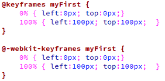

Animations
| Property | |||||
|---|---|---|---|---|---|
| @keyframes | 10.0 | 4.0 -webkit- | 16.0 5.0 -moz- |
4.0 -webkit- | 15.0 -webkit- 12.1 12.0 -o- |
| animation | 10.0 | 4.0 -webkit- | 16.0 5.0 -moz- |
4.0 -webkit- | 15.0 -webkit- 12.1 12.0 -o- |
Het is nu mogelijk om animaties te maken met CSS3. Deze animaties kunnen de bekende Animated GIFS en Flash animaties vervangen. Het grote voordeel hiervan is dat de animaties werken op bijvoorbeeld mobiele apparaten. Er is dus geen extra plugin meer nodig om je volledige webpagina te laten zien aan de gebruiker. Er zijn ook nadelen. Animations werkt op alle grote webbrowsers maar de -webkit- prefix is nogwel verplicht. Daardoor is het programmeren van een simpele animatie vele malen meer werk dan in bijvoorbeeld Flash.
De @keyframes regel is nodig om de animatie werkend te krijgen. Net zoals in Flash, gebruik je keyframes om de animatie te sturen. Bij elk keyframe bepaal je de eindpositie van je geanimeerde object. De tussenliggende stappen worden dan automatisch uitgerekend. Waar je in Flash met framenummers werkt, werkt @keyframes in percentages. Dat wil zeggen dat je bijvoorbeeld aangeeft dat op 0% van de animatie de achtergrondkleur rood moet zijn, op 25% blauw, op 50% geel, op 75% groen en op 100% weer rood. Afhankelijk van hoe snel je de animatie hebt ingesteld, veranderd dan ook de achtergrondkleur. Je kunt ook de woorden “from” en “to” gebruiken in plaats van percentages. Deze staan dan gelijk aan de 0% en 100%.
| Voorbeeld 6-1 |
| @keyframes | |
| animationname | Verplicht. Naam van de animatie, door je zelf te verzinnen. |
| keyframes-selector | Verplicht. Percentage van hoe lang de animatie duurt. invoerwaardes: 0-100% from (zelfde als 0%) To (zelfde als 100%) Je kan zoveel keyframes-selectors in je animatie stoppen als jezelf wilt. |
| css code | Verplicht. Hier geef je de css code op, hoe je animatie op dat moment eruit moet zien. |
Om dit wat duidelijker te maken, zie je hieronder een voorbeeld waarbij de achtergrond kleur van rood naar blauw veranderd. Omdat dit maar twee handelingen zijn, wordt de from-to gebruikt.
| Voorbeeld 6-2 |
Kijk goed naar voorbeeld6-2. Je ziet daar op regel 8 de prefix -webkit- toegevoegd worden. Let er op dat eerst de @ komt, dan de prefix en dan pas keyframes.
In de nieuwe versie van Dreamweaver gaat dit prima. In de wat oudere versies (5.5 en lager) wordt niet altijd de prefix voor de @keyframes herkend. Probeer je daar niet door te laten afleiden.
| Opdracht 1: overtypen |
Maak een nieuwe HTML5 pagina aan.
|
Met de @keyframes worden de stappen bepaald en de veranderingen. Daarnaast moet dit ook aan een divisie worden gekoppeld. Dit doen we met de animation. De syntax zie je in voorbeeld 6-3.
| Voorbeeld 6-3 |
| animation | |
| name | Verplicht. Naam van de animatie, door jezelf verzonnen bij de @keyframes regel |
| duration | Verplicht. Duur van de animatie |
| timing-function | Optioneel. Wat voor manier van bewegen heeft de animatie. Standaard is dit ease. Als je een gelijkmatig verloop wilt hebben, moet je voor linear kiezen. |
| delay | Optioneel. De pauze totdat de animatie moet beginnen. |
| iteration-count | Optioneel. Hoe vaak achter elkaar moet de animatie herhaald worden. Voer hier infinite in, voor een oneindige animatie. |
| direction | Optioneel. Hier kan je er voor kiezen om de animatie achterste voren af te spelen. Voeg het woord alternate toe om de animatie eerst normaal af te laten spelen en vanaf het eindpunt weer terug naar het beginpunt. |
| Voorbeeld 6-4 |
Je ziet hier dat bij de divisie alle eigenschappen van de divisie worden opgegeven en dat bij animation de naam van de animatie staat, de tijd en dat deze linear moet bewegen. De naam is myfirst. Deze naam kan je zelf kiezen, maar in voorbeeld 6-2 hebben we bij de @keyframes de naam myfirst gebruikt. Dit moeten we dan hier ook doen.
| Opdracht 2: toevoegen |
Open het bestand Opdracht6-1.html.
|
Je ziet dat de achtergrond in twee seconden veranderd van rood naar blauw. Aan het einde springt de divisie weer naar rood en stopt. Als je wilt dat je divisie de blauwe kleur blijft houden moet je geen animations maar een transition (zoals in de vorige les behandeld) toepassen. Bij animaties is het pas interessant wanneer deze oneindig afspelen.
| Opdracht 3: oneindig |
Open het bestand Opdracht6-2.html.
|
Naast de achtergrond kleur veranderen kun je de divisie ook over het scherm laten bewegen. Hiervoor moet je bij de divisie de postion:relative; opgeven. Vervolgens ga je bij de @keyframes door middel van de optie left: en top: de positie van de divisie bepalen.
| Voorbeeld 6-5 |
|  |
Kijk goed naar voorbeeld6-5. De beginpositie (from) is left:0px; en top:0px;. Dat is afstand vanaf de linker- en bovenkant van het scherm. De eindpositie (to) is left:100px; en top:100px;. Ook weer vanaf de linker- en bovenkant van het scherm.
| Opdracht 4: namaken |
Maak een nieuwe HTML5 pagina aan.
|
We zijn nu steeds bezig geweest met een animatie die van de beginpositie (0%) veranderd naar een eindpositie (100%). Om het echt een animatie te laten lijken, gaan we een aantal tussenstappen toevoegen. Kijk goed naar voorbeeld6-6 hoe je dit doet.
| Voorbeeld 6-6 |
| Opdracht 5: namaken |
Maak een nieuwe HTML5 pagina aan.
Sla het bestand op als Opdracht6-5.html. test het in verschillende webbrowsers. |
| Opdracht 6: namaken |
Maak een nieuwe HTML5 pagina aan.
|